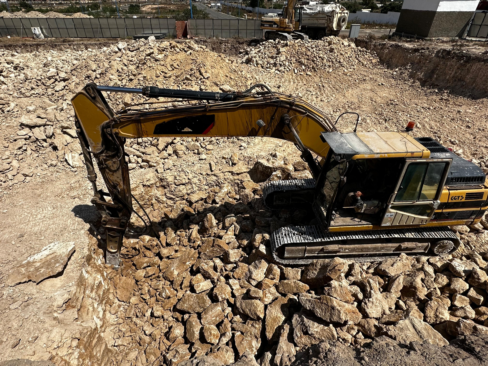
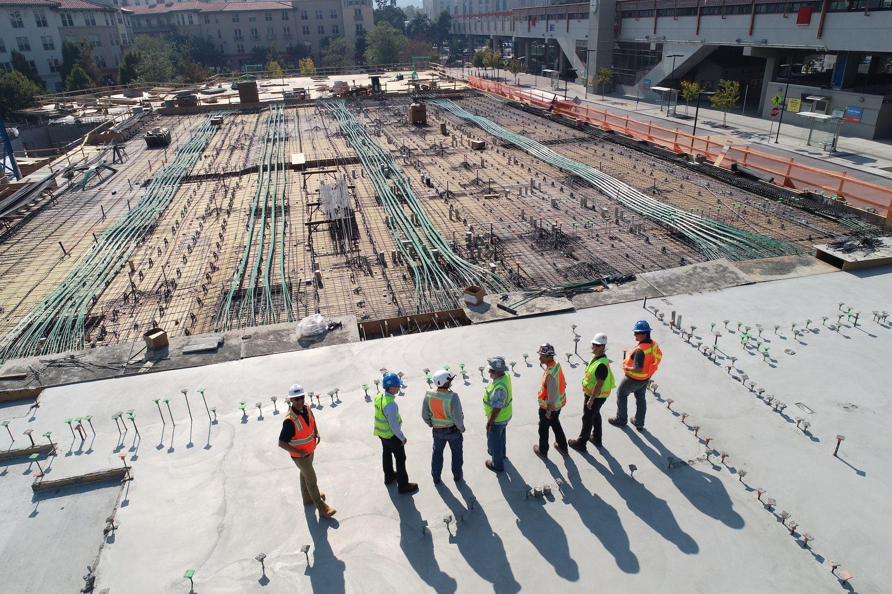

Une maîtrise intégrale de chaque étape constructive, des fondations géotechniques jusqu'à la livraison clé en main.
Spécialiste reconnu des chantiers géotechniques complexes, TG2D intervient sur les terrassements en pleine masse, les déroctages rocheux à haut rendement et les fouilles de grande profondeur en milieu urbain ou semi-aride.

De la superstructure d'immeubles de grande hauteur aux radiers étanches en sous-sol, nos équipes d'ingénieurs calculent et exécutent des structures conformes aux normes parasismiques marocaines RPS 2011 et Eurocodes.

L'enveloppe du bâtiment reflète l'identité architecturale de vos projets. TG2D conçoit et pose des murs-rideaux vitrés VEC/VEP, des menuiseries aluminium à rupture thermique et des habillages composites Alucobond.

Viabilisation complète de parcs d'activités, réseaux d'assainissement gravitaire, bassins de rétention des eaux pluviales et voiries lourdes bitumineuses.
